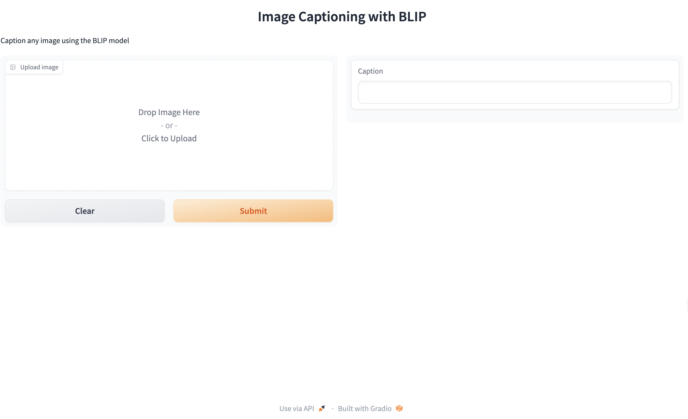
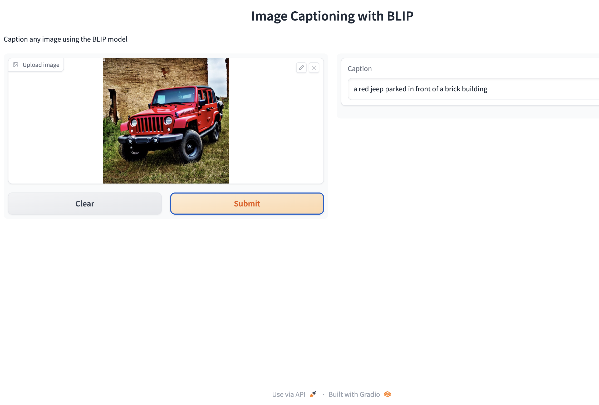

import gradio as gr
import os
import io
import requests
import json
import IPython.display
from PIL import Image
import base64
from transformers import pipeline
from dotenv import load_dotenv, find_dotenv
_ = load_dotenv(find_dotenv()) # read local .env file
hf_api_key = os.environ['HF_API_KEY']Image Captioning App
Setup
Python
Load your HF API key and relevant Python libraries.
Image captioning model
- Here we’ll be using the Salesforce/blip-image-captioning-base a 14M parameter captioning model.
get_completion = pipeline(
"image-to-text", model="Salesforce/blip-image-captioning-base")
def summarize(input):
output = get_completion(input)
return output[0]['generated_text']API-code (optional)
- Optional: Here is the code for the API-version:
# Image-to-text endpoint (with API)
# def get_completion(inputs, parameters=None, ENDPOINT_URL=os.environ['HF_API_ITT_BASE']):
# headers = {
# "Authorization": f"Bearer {hf_api_key}",
# "Content-Type": "application/json"
# }
# data = { "inputs": inputs }
# if parameters is not None:
# data.update({"parameters": parameters})
# response = requests.request("POST",
# ENDPOINT_URL,
# headers=headers,
# data=json.dumps(data))
# return json.loads(response.content.decode("utf-8"))Image Captioning
Image example
- Free images are available on: https://free-images.com/
image_url = "https://free-images.com/sm/9596/dog_animal_greyhound_983023.jpg"
display(IPython.display.Image(url=image_url))Model output
get_completion(image_url)- [{‘generated_text’: ‘a dog wearing a santa hat and a red scarf’}]
Captioning with gr.Interface()
def captioner(input):
result = get_completion(input)
return result[0]['generated_text']
gr.close_all()
demo = gr.Interface(fn=captioner,
inputs=[gr.Image(label="Upload image", type="pil")],
outputs=[gr.Textbox(label="Caption")],
title="Image Captioning with BLIP",
description="Caption any image using the BLIP model",
allow_flagging="never"
# examples=["your_image.jpeg", "your_image_2.jpeg"]
)
demo.launch(share=True)Gradio interface

Gradio output

API version (optional)
- Optional: Use this code if you want to use the API
# converts image to base 64 format (required for API)
def image_to_base64_str(pil_image):
byte_arr = io.BytesIO()
pil_image.save(byte_arr, format='PNG')
byte_arr = byte_arr.getvalue()
return str(base64.b64encode(byte_arr).decode('utf-8'))
def captioner(image):
base64_image = image_to_base64_str(image)
result = get_completion(base64_image)
return result[0]['generated_text']
gr.close_all()
demo = gr.Interface(fn=captioner,
inputs=[gr.Image(label="Upload image", type="pil")],
outputs=[gr.Textbox(label="Caption")],
title="Image Captioning with BLIP",
description="Caption any image using the BLIP model",
allow_flagging="never"
# examples=["christmas_dog.jpeg", "bird_flight.jpeg", "cow.jpeg"]
)
demo.launch(share=True, server_port=int(os.environ['PORT1']))Close all connections
gr.close_all()